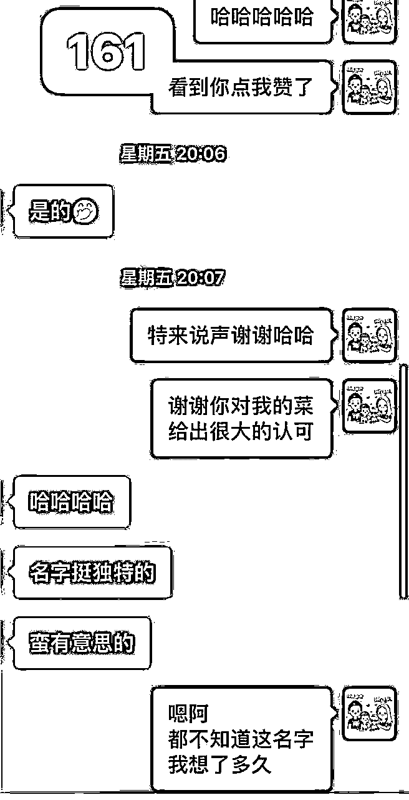

来源：https://oee5lr7gsk.feishu.cn/docx/PNZad9NRyoNkKix9O01cJ0UEnke
全文 11,123 字，大约需要 15分钟 时间阅读
上一篇文章提到25个微信提高成交率的小技巧
这篇文章，我想更深入地谈谈——私域经营
私域经营或者说一对一的经营，一直是我很擅长的点。
我去年几乎所有的成交，都是因为
我一直觉得关系经营是一件一辈子的事情
会这么讲，是因为我自己有过十年的销售和带团队经验
我对生命的定义就是「关系」
因为一个人最终能不能幸福，其实取决于ta与身边人的关系，
与父母的关系，与子女的关系，与朋友关系，甚至于与粉丝的关系
这次的内容全部来自于我的日常聊天
我也正是透过这样的聊天
一点点经营自己的私域好友的。
每一则对话截图，都有做详细拆解
或者是私域经营的思维、或者是私域经营的小技巧
我觉得这些内容
对于一个做副业的人很重要
因为几乎所有成交，都离不开关系经营。
特别是有自己的私域的朋友，
如何更有效率地经营私域，同时还能持续地让客户愿意为你付费，甚至每次付更多费用给你
我其实挺喜欢这种对话截图+拆解的模式
因为有实战演示，看完就能立马用起来
希望这篇文章能够帮到你
这则对话比较长，大概用了，三十五张图片拼接而成。
这是一位老朋友，最近某些契机之下，又不小心找到共鸣点接上。
我一直说，平时需要经营人际关系，
那到底怎么定义『经营』？
都知道要经营，那到底要经营些什么？
送礼物
发红包
随意聊天
日常打招呼
..............
这些都是一种经营方式
轻，同时也有用
但是经营关系，有没有更高维度的经营方式？
其实有，我定义更高维度的经营。
其实就是，
这个价值，可能是交换，
假设对方找我谘询，并且付费给我，或者打红包给我。
这个价值，也可能是无偿。
我就觉得能尝试做做，说不定，这件事情可以给对方，很大的帮助。
然后有一天，我就可以得到更大的反哺。
但不管是哪种，都是给出自身的价值
既然经营是提供价值，那就得问：
『我』的價值是什么？
『我』能提供些什么？
『我』擅长的是什么？
这段对话，可以延伸的反问自己：
我到底有什么价值，可以与人『交换』，
或者是这价值，别人没有，但我有？
给不到『人无我有』的价值
那最少，得想办法让自己，培养一份『人有我优』的价值。
这段的小tips：
这张对话，是一位今年二月加我的好友。
当时也没聊上几句，但是，彼此有着某个共同群，十个月后，对方主动找我成交了产品。
我一直觉得，任何时候，只要把『关系』做一个维系。
这维系其实很简单——善待人就好。
只要遵循这两个重点，其实，人生就有机会，随著时间的拉长，所有事情都变得越好。
这一段的小tips：
经营关系这件事情，一直都是个，长期需要看待的事情。
只要把时间拉长，就会发现每一段关系都很值得。
这是一位沟通课的老学员成交
我发现很多时候的成交关键，其实就是
每个小细节能做好就尽量做好，在当下的能力范围内做到最好。
只要能对得起自己，知道自己已经很完整的交付了
这时候，再透过私下的服务，成交的机率，肯定能提高。
虽然，要做到次次成交不可能
但是，一定有某些行为可以大大的增加成交率。
过去，我曾经认为，聊天必须得用上很多技巧。
但时间一长，虽然，感觉上我谈到很多『技巧』
但我后来发现不是。
这只是一种把『用心』量化的行为
只要用心，很多東西都有机会，更好的水到渠成。
这是一位老朋友，也是过去的沟通课学员。
其实，对这位学员，我一直都印象非常深刻。
很大的原因是，这学员非常有礼貌，超级的那种。
那我是怎麼分辨礼貌或者不礼貌？
看对方回复的内容
数量、以及编辑方式
还有使用的文字
每一次都可以感受到，这位学员给我回应时的尊敬。
每个词都能知道，她是刻意编辑后发给我的。
这感觉会令人非常舒服，刚好趁著这次，我又找了她聊天。
发现最近换了城市，有了新的开始。
原来，一直以来都是我疏于关心，这一段对话，给我最大的感触是：
每天讲个一两句，其实一个月下来，不就聊了好几时句吗？
关系，都是从这些小小的过程中，慢慢变深的。
这一则对话，是一位老朋友的成交。
人与人的相处中，有个我认为很不容易的事情，也是很难的，但我又觉得很必备的事情。
就是：
1.私下跟我聊天，
2.群里跟我对话
3.群里看到我说话
4.听我讲课
5.看我的课见
这五种角色要画上等号
有些人是这样的，讲课的内容，跟这个人是无关的。
说的东西，从私下聊天可以感觉，这个人说的跟做的不一样，讲的都是自己做不到的。
这样的角色分裂，只要出现太多种，就有机会，让多数人产生反感。
最初跟这位朋友聊天，一直到，这位朋友在共同群裡，看到我的对话，还有我分享的内容；
发现，整个过程我的人设，都是『一种人设』。
只要这个人设是对的，就有机会，随著见到的次数越多，产生的好感度就越高。
接著，成交率就能缓缓提升。
这段对话的小tips：
让自己的样子，呈现一种内在真实的样子
这种IP才是长久IP，也才不会因为，一件事情做的越大，结果越不开心。
这对话是和老学员的一次聊天。
日常的经营其实挺重要的。
一直以来，我对于关系的维护
老朋友：新朋友 = 7 ：3
我会花比较多时间，关注老朋友、或者是老学员老学生。
当然，这样的比例随时能调整。
要看个人能力以及个人擅长的区块。
我知道，相比于新朋友运营，我更擅长的是转介绍运营。
因为这样的比例，我会花更多时间在，关心老朋友上面
但销售的终点，一直都是转介绍。
只有能妥善的，把转介绍比例拉高，这样的销售路径才完整。
因为转介绍，是一种个人能力的反馈。
这一段的小tips：
可以统计自己，每天聊的朋友当中，有多少转介绍名单。
如果转介绍名单的量，可以占新朋友的20%
那这个销售路径，就非常健康！
这则对话，是过去一位沟通课的学员，我印象很深刻。
因为，这位学员曾经写过一篇夸奖我的公众号。
看着很感动，这事情我一直放在心上，我觉得这个群是一种福利。
因为，对于建立人际关系这件事情，我觉得我算是擅长。
想着，这等福利得赶快跟一些我很重视的朋友说。
于是就有了这样的邀请，很顺利的成功啦～
这一段聊天让我学到
经营人际关系，是一件重要不急的事情。
当下看着不重要，但是，久久不做就很严重。
给自己一个保持匀速的方式：
每天一点
每天一点
……
只要关系建立的好，哪天真有什么事情或者是邀请
肯定都能水到渠成。
我对私域的理解，可能会有点不同。
你跟越多人，有深入链接的交情，那私域就可以越稳固
因为私域，就是透过好多好多的私交，汇集而成的一个群体
也就是私域的基础单元是，每个人鲜活有温度的「个体」。
私域经营的核心，就是回归到每个人「个体」
把夸奖、认同、关心、能量，透过文字传递给对方。
我把这样子的方式，也定义为微信上的「人情味」，
这其实和线下场景是一模一样的。
这一部分的案例
主要是讲一对一私域经营
我们先看这则对话，内容有点长。
这是一位，参加过三期小源说说的老朋友，上过时间管理，同时，也上过沟通初阶班。
一早，突然看到他给我发讯息，其实很久没聊天了，对方一直有事情忙著。
好像是十月多，我曾经留过一次言。
刚好，跟这位朋友在某个共同群，因为共同群中，我发了某张图，一早关心之余。
他也发了群里截图，问我说这是什么课，
可以看到对话，我並沒有直接介紹課程，因为许久没联系，
我把焦點放到了『关心近况』上，只要有交情的朋友，太久没联系。
我一直有一个价值观：
但如果一直都有聊天，那这个环节能省略。
聊著聊著，对方也主动把焦点拉回来，问我课程的事情。
这里有个小插曲：
过去，我的初阶沟通课，曾经有一次涨价到三百多块。
这么多期以来，就那一次涨价，其实，对于那次的学员，我心中一直是存在亏欠的。
刚好趁这次，我把这份心中的亏欠，透过蜕变群放下了当时亏欠的大石头。
这位朋友没加入群，只想透过飞书看资料。
人啊，很多时候都得学会变通，
一样东西，不是只有一种卖法。
这对话的小tips：
链接关系的时候，假设，过去有些没做好的事情，找个机会弥补了，
一次次的弥补，就可以让心中埋藏许久的不安，慢慢的消除。
也唯有这样，人生才能随著年纪增长，活的越通透
这是一个日常闲聊，没带任何目的性。
但是聊天的过程挺愉快的，我觉得现在对于夸奖跟认同
我能做的非常好，非常的自然，是一段好聊天。
一段好的沟通，一定离不开「夸奖」和「认同」，这是提高聊天能量的关键。
想要跟客户建立信任，你可以试试在聊天中，多一些「夸奖」和「认同」。
这是这则对话，想给大家的一点建议。
这张对话的背景，是因为认识不久的朋友，宣发了一个99元的新课。
其实，这位朋友在群里，有发了一张99元的优惠券。
但是，我并没有领券，而是直接花钱买，经营关系的过程中。
『花钱』一直是个很有趣的行为，大钱肯定需要考虑。
但在经济许可的状况下，我有个建议，小钱都不要考虑。
199元以内都是我暂时定义的小钱
只要是一个我觉得很值得经营的关系，又或者是对方年轻很认真。
只要有一项，是我觉得很棒的特质，小钱我肯定不省。
我自己卖过课我懂。
有人愿意为了这堂课付钱，不管买了看又或者买了没看
这我都不太在乎。
我只知道，有人愿意给支持，这种开心都会让我难以忘怀。
有时候，多用一些不大的钱，把关系慢慢的加深。
这会是一种很好的关系维系的方式。
看似简单，但非常好用又有效果
这对话的小tips：
这是某个群，转介绍主动加我的好友。
因为在群里，看过这位朋友的自我介绍。
某个领域中，這是個很有成绩的人。
所以我会更客气一些，通常这样的状况下我都会先放低自己，这是我的沟通习惯。
当然有多数的语言，都是相对幽默的方式，没抱任何目的就是闲聊。
对话的方式，大家可以看一看
这位朋友，是一位不同领域的大佬。
其实，经营不同类型的人，方法跟自己的角色必须得做点调整。
这个调整，并不是不做自己
而是需要调整自己的一点沟通顺序以及方式
一般来说，碰上了与自己不同领域的大佬
我肯定放低自己，因为，他会的我都不会。
对于任何优秀，一定得带上基本的尊重。
这则对话的开头，其实，是从某个共同群中的延伸。
我把对方给我的反馈，复制贴上到私信。
有个好处
这能让对方感觉到被重视，这是一个很重要的事情
角色做个交换，谁不喜欢被重视呢
同时，这也是一个找话题的好开头。
不用担心聊不下去，但一定要拿捏时间。
我是去道谢的，不是去深聊的。
所以这段对话并不长
只要做好一个日常的经营
对于大佬，更应该每天一点点，每天一点点。
重点不是链接，而是在对方的心中增加自己的『存在感』
这一段能特别的学起来，是我习惯的方式。
存在感当到了一定的量，这时候的链接，才能水到渠成。
过去，我看过很多『交换广告』
想学英文，我可以用教钢琴交换
想学日语，我可以用教健身交换
.......
我发现，很多时候的交换，不一定要用『金钱』。
而可以用自己的技能，做一个『等值交换』，
这有个前提，我自己得会点东西，我得让自己有价值。
不然，谁愿意交换呢？
对于任何领域，我都会抱有很大的『尊敬』。
尤其，当我知道对方在某个领域比我厉害，又或者是他会的是我的某个盲区，那我就会释出善意。
这善意就类似：
对方向我提问，我就会免费的回答
这就是为了同时创造，让对方知道，我在某些领域也有价值
这张对话的对象，就是一位在其他领域我觉得很厉害的朋友。
所以我很愿意回答，一部分是，我得证明我有价值。
另一部分是，回答这些问题，对我来说并没有压力，打打字的事儿。
但这些善意，都能创造出一场未来的『合作机会』。
这段的小tips：
有时候的合作，自己可以先『主动给出』，合不合作先不管，但路得先铺着。
一位很有活力的老朋友，当我发讯息给他，
他一回复的瞬间，我就知道，今天可以多聊一点。
尝试的跟他介绍我想说的新产品，因为聊天氛围都很好，我也说的直接。
就是最后，等她一句一句打的过程，心中还是有点慌。
毕竟，开口总希望能达成目标。
每次碰上这样的聊天『状态』，我其实都很开心。
开心自己的一点给出，能在别人心中有好的信任感。
这是一种比赚到钱还要开心的感觉。
这是我在某个群活跃后，主动加我好友的。
因为是主动上门，所以，信任感一定会比单纯的陌生人要来的更高。
这时候，只要注意点礼貌，然后找一两个小话题聊天（尤其是共同话题）。
就可以初步的，让对方对自己的信任感加分。
细节在聊天内，能看看。
这也是一种，我的风格以及日常的聊天方式。
对于陌生人提出需求后，一个比较好用的模版：
我们可以看下面的这则案例：

这张图的背景是这样的：
小A因为有需求，透过一些渠道加了小B，并提出需求。
第一张图片的『好的』之后，小B就把小A，拉到了一个群，并且把其他厉害的人一起邀请进来。
那这个群的最后，其实没有成交小A任何的东西，小A也说暂时没需求。
下面两段小对话，是小B在某个群里面做的小复盘。
对于信任感还不太熟悉的人
很忌讳，一开始就谈『项目』或是『需求』。
因为这两个点，没有信任感的支持下，很难获得认可。
怎么判断对方目前的需求很模糊，甚至，这个对方，可能对于需求都不太清晰？
有一个很好的判断点，就是，当他一次说出『多种』需求的时候。
只要对方一次性说出太多需求
通常，这样的人现阶段，一定也是混乱的状况，
这边指的是多数人，但有少数例外（先不深入）。
当对方处于混乱状态，
这时候，业务员就必須得，帮助客户『精准需求』。
假设是我，可能就会这么回复：
很难得
可以碰到一位
对于学习这么有热诚的人
你对自我的期许一定很高
我能知道一下
目前这么多课程中
哪一个是你觉得目前比较迫切的吗？
因为这是陌生人，我依旧习惯，先把关系做一点温暖，然后再疏理他的『需求』。
最终，我才会给出方案，这是一个挺万用的模式，
好用，有效果，同时又能增加成交率。
这是我的一位同行者学生
很多时候，越亲近的人越容易忽略。
就因为熟悉，所以很多事情会『省略』，
结果搞的，因为熟悉，那份关心、那份重视竟然就消失了
元凶就是：过于熟悉
这位学生，之前我问了个事儿，他很快的给出了协助。
但我当时，忘记给他回应，这其实很不应该。
今天我翻了对话记录，才发现忘记给他回复
认真的说了道歉，然后学生又刚好提问我。
虽然是道歉，我不小心又拿到了红包，铪哈。
所以我觉得把我的付费社群当成礼物送给学生。
这是一位老朋友，很久没联系，真得很久很久没联系。
其实聊的前几句，我自己能感觉时机不到。
会有这样判断，是因为对方的回复字数也一定程度上，代表着信任度。
所以前五六句聊天，我就没想谈99元商品了
而改成就是跟她闲聊，关心他最近的状况。
也是想着透过闲聊，重新一点点地把信任建立起来。
这是一位老学员毕业后透过课程的转化。
我一直有习惯，一堂系列课结束之后
给每一位学员，私下发毕业证书。
真正的转化，其实，都不是在『群里』转化的。
多数的转化，依旧得回到一对一私信。
多聊一点
多做一点
多用心一点
才能真正的提高转化，这就很像过去老一辈说的：『人在人情在』
这个人情，换成互联网的语言，就能理解成：
我跟这个人的私信，只要私信做的好，课程，只要说的不是太差，都有很不错的转化机会。
这张图，也是一位老学员的转化，以前学销售的时候，老师教过我。
如果客户『当下』口头答应，那我们就不能放到隔天。
钱得先收，订金也好。
这样能让客户不至于过了一天就反悔。
这看著是一种技巧，但是，如果这是一位新认识的好朋友。
我估计也会说订金，但不先拉群，但这位朋友是沟通课的老学员。
因为交情在，虽然只收了订金，但我同时也先拉进了群。
很多时候，『信任』这件事情，我都习惯先主动给。
给了之后，就有机会再次的获得对方的信任。
这是我一直都会做的方式
这是一个学生的日常私下经营
我想，「不小心忽略訊息」是这个时代容易发生在多数人身上的事儿。
因为讯息太多了，多到都不知道该从何处理起。
我认为，真不小心忘记讯息，问题倒不大
但如果不小心忘记了『重要群体』的讯息
次数太多，就是大事了
这段对话，我主要想谈的事情是，
你有没有一个机制，能更好的提醒自己记得能回复重要讯息
我会用的三种方式
第一种：滴答清单
当下有个讯息很重要，我也说了，晚一点回复你
这时，我就會把這段內容，放进待办事项。
第二种：红点不要点开
假设我知道，当下没时间回复，那我就不点
因为我每天都有一个，把所有红点，全部点掉的习惯。
所以只要不点，晚上我检查手机，就能知道哪个讯息没回。
第三种：置顶
重要的人才置顶，答应了要回的讯息，我也会置顶。
这样就不会忘记讯息
这对话的背景，是一位老朋友找我更改资料。
其实，『关系经营』是个需要，花大把『零碎时间』做的事情
只要时间花了，就肯定有效率
尤其，像这样的『被动式』经营关系。
这是对方主动找我，其实，是一种『事情』的找。
但不管什么样的场景，除了把事情完成，我总会多一两句的闲聊：
可能是近况
可能是事情的延伸
也可能是不同的观察
反正，只要有机会找到话题，我就会趁著，多闲聊个几句。
大家可以先看对话
这事情真的很重要，各位一定听过——滴水能穿石
日常的小关系零碎经营，其实，更是一种滴水穿石的概念，只要有这习惯
就会发现，万物都能变成话题，
就以这则对话，有几个我刻意的话题延伸
1、事件话题
手机换了
我多了一个苹果跟华为的话题
2、说到了我煮饭
聊到煮饭，還有機會讓這位老朋友，
到杭州能产生见面的机会（新的谘询课学生）
3、贴图话题
贴图是李诞
因为我最近看脱口秀，发现他也是爱好者，这又是一个话题延伸。
其实就短短的十几分钟，就能知道这位朋友的近况。
然后，把这样的关系『维持温度』
这些小事，日常要习惯做
其实就十分钟，别小看这十分钟的『零碎』
有一天，就会因为这诸多的『零碎』，
创造出一個自己的小私域体系，信任感就能持续的保持中上。
今天到朋友的店里吃饭，这是我的一个固定行程。
每周五，上课前都会到朋友的店里，跟学生一起吃饭
每次只要吃，我都会拍照片发给朋友，吃几次我就拍几次。
这其实是个非常关键的『小举动』。
这么拍，并不为了要让朋友打折，只为了让他知道我又来『光顾』了
之前我说过，所有的交情都需要『积累』。
那到底要怎么做，才能有效的『积累』呢？
最简单的，就是当你感觉特别为了这朋友做些什么的时候。
做完，跟他说一声。
很多时候
每一次说，这份交情又加一分
加著加著，当哪天突然有什么需要对方协助的时候
就会因为，这一次次的积累，朋友就愿意给上我帮忙
生活上，我一直都有个习惯：
『刻意的』让自己跟固定朋友或者是想经营的新朋友做这样的小举动
真的不用多，就是每几天微信上一两句，这就很足够了。
这是一位新朋友，昨天加上我好友的，来自某个单价比较高的群。
周日的聊天因为我手机用的少，所以当时简单的打声招呼我就没继续回。
很多时候，经营朋友的时机得『趁热』，
拖太久，感觉会莫名的冷却，周日我特别放进了待办事项，提醒自己要主动。
但这类的主动，我都不会聊太深，就是简单的聊个几句，增加熟悉度。
要是对方忙，我也不会持续的追踪
就是先摆著，只要维持一定的好感度就足够。
这个时机不需要聊深，简单的带过，让对方有印象即可～
这张对话是，老学员主动的私信我报名
对话很简单，就是来了给钱，哈哈哈
对话的小tips：
平时，一定要做好每个『小事』
我记得有一次，看刘润的公众号
刘润说：
其实公众号对我来说
是所有产品中产值最低的
变现最低的
但为什么我要一直坚持写？
因为
每一天的更新
都是一种影响力的加分
当哪天，影响力到一定程度的时候
假设，发售了某个新产品
這時候，就会突然涌出很多人跟你报名，
『公众号』也能是很多不同的代称
小红书
抖音
视频号
平时自己每个群的活跃度
..........
这是一位老学员，很久没联系了，
今天想透过一点简单的聊天，一段固定开场话术。
重新启动这份关系。
聊的挺简短，但是对话的内容，值得看看
这是一位老学员的成交。
之前说过，重要的事情千万不要在「对方没空」的时候，一次性打一堆，这样的效果会非常差。
想像一个场景，跟朋友喝咖啡，结果聊到一半朋友去洗手间。
回来后，你就跟朋友说：
我刚想跟你说的话
已经录音了
我先走
你等等听
这举例看著挺荒谬。
但我一直都认为，所有的线上场景，都是线下转变而来的。
这段对话的后面，有个很重要的『小环节』。
之前我说过，如何判断这位朋友对我有信任感？
从发的每段文字中，可以感觉的出来，这也是我初步，定义的『值得经营的对象』。
也因为有这样的判断，刚好距离过年，我确实没有合适的课程，可以推荐。
但这很严重，很多事情过一个年，都会发生很大的变化。
我得用個方式或者是再开一堂不同的课，才有机会，把这样的朋友留住，最少，多了一个群能运营。
信任感，就不会因为过年而变淡
所以我多了这段话，这是心里话，真的想把这位学员，用别的课程先留著。
因为时间点，刚好逢过年。
这段对话的小tips：
对的人，值得经营的人，一定要有个场景，或者是环境可以留住对方。
因为每个对的人，都是无比需缺的名单！
这张图是两张小图结合起来的
这其实是个挺『合理』，也挺『正常』的场景
就是人与人相处中，互相给点帮忙的举动
但这种场景，其实，有更好的执行方式。
人为了目的，而想尽办法达成。这都没错！
但过程，肯定有更好的方法。
之前我谈过一个思维，这思维是
所以，任何事情，当想到第一个答案之前，先不要急著执行，
而是问问自己，如果有比现在更好的方式，那可能会是什么？
这是我的惯性思维，这种思维只要有，
人就能出现『持续的匀速成长』
这人其实不错了，还知道先在我朋友圈点个赞，私下再请我帮忙。
因为更多人，连朋友圈都不点赞
但是请别人帮忙，最少得花点时间布局吧，而不是这么粗糙
要是我，假设需要请一个人帮忙
我最少最少，都会用一周的时间，跟这人重新把关系温暖温暖
这七天，有几件事情是我会做的：
1、连续七天点赞
2、最少留言三次
3、私信聊天最少两次（累计二十分钟）
当然，这样的场景，就目前我的状况来看，这情况不太出现。
可以理解成，刚刚说的是『速成』方式
适用于一种状况，平时很少经营人际关系。
另一种情况是，
如果，平时有习惯经营关系，那这事情，那这张图片的对话内容，就是大忌
我有一个原则，不跟近三个月（含以上）的朋友，推荐产品
这同时也代表，平时，我一定会刻意的，甚至把这事情当成习惯
就是经营人际关系
可能是一对一经营，也可能是，透过群经营。
想像一个场景
如果，我跟你平时没有聊天，然后，你付了费用到这个沟通群
结果，整整三个月，私下我也没找你聊天，群我也都不管理
然后三个月后，我突然群发推荐新课程
還私下跟你说，要不要报名我的新课程
想想这场景，购买率会高吗？肯定不会
因为信任感，就是一种透过日常小举动，慢慢累积、茁壮的过程。
人际关系经营就是这样，哪有什么诀窍，就是怼时间
总结：
学好的案例，可以让自己有成长的模仿
看坏的案例，可以让自己不要犯同样的错
這张图的内容，请各位别学习！以上
我后来回复他了
主要是这事情，对我的影响不大，虽然加群后也是被我丢入摺叠
但很多时候，开口就是一种勇气
在不影响生活的状况下，回馈对方的勇气，也是个善意的小举动
反正就是点点手指的事情
这次的对话挺有趣的，背景是这样的：
前几天刷朋友圈的时候，刚好看到
某一则更新图的对话背景，是我金句课的背景图
看到更新的人，我知道这不是我的学员
但聊天背景却用著我的图
看到的当下，我真是挺开心的
这代表，自己的东西开始有传播性
我就随手一个留言说：
这背景图真不错
哪知道这一随手留言，搞的对方很紧张
他一紧张，搞的我就莫名的觉得有趣
然后，这则朋友圈就被删掉
这位朋友，也私信给我说要报名
然后说了声很抱歉，使用了我制作的背景图案
我个人，一直都没有什么著作权的概念
反正，想用就拿去用，拿了我的档案也拿不走我的人
聊天的时候，我还随手发了几个，也是沟通课的背景图案一起分享
这位朋友，私信跟我道歉的同时，也给了一个红包，红包金额是去年沟通课的金额
但这个课，今年已经没有开了
当时我没有点红包，而是跟他说，今年有新的计画，
这位朋友呢，听完后啥也没说，就把差价都补上，说要进入新的沟通群，就这么成交了。
边聊天的过程，我也拉了跟这位朋友，去年成为好友时聊的内容
幸好，最初的聊天我很有礼貌
对方当时说，2023年一定会参加我的课程
我也说了没问题，很欢迎
这也是
每次聊天，都保持六十分的基本礼貌
累积多了之后，总有一天会得到反馈
我已经有太多的成交
都是因为，最初有好好的服务，每一个新认识的朋友
成交这事情，只要自己一直往前走
总有一天，一定能成交
葡萄：
学到了
有时候不那么有礼貌的人
我们也要保持60分的礼貌嘛老师 🥺🥺🥺
我不太因为对方没礼貌，然后自己就没修养
这是两回事儿～
其实，维持基本六十分的礼貌
是这个年代，非常稀缺的特质
多数人都急，这人无法成交就对他不耐烦
但销售这档事儿，本就应该，有一段很长的经营客户过程
我们总希望別人也有礼貌，但自己却不常做到
又或者是，别人一对自己没礼貌，我们也马上无礼的回应
那最终就变成，我的礼貌对待，因人而异
这张对话的背景是：
我更新了一篇朋友圈，有很多朋友给我点赞
我随手找了一位，然后，私信这位朋友跟他说谢谢。
这其实是个非常柔和的开场方法

有著很明确的理由外，还能让对方有种被关注的小惊喜感。
毕竟，随手点一个赞被道谢，这不是一件能常常碰上的事儿。
开场之后，只要随口问个：
许久不见
最近一切都顺利吗
这就能有个很棒的聊天场景，能很容易地接上各种不同的话题。
挺好用，触达私域的小技巧～
一直以来有两件事情我很少做
1、群发
2、机械回复的外挂软件
我一直认为，就算变成打字，『温度』依旧可以发生。
私域的核心，就是把人与人的温度透过文字创造回来。
假设，你也有属于自己的私域
千万记得，不要犯這樣的錯
该手动就手动，甚至，所有事情都变成手动，温度才会发生。
先看这则对话，是学员给我发的一段提问，内容有点长。
在私域经营中，我一直秉承着一个观点，就是：
但我认为，这件事情能不能大卖，关键不在『文案』好坏
而是，这个产品的销售，小红能多送点什么
这才是重点
因为低价产品
多数人在乎的根本就不是产品本身，而是，我买了这产品，可以同时获得些什么。
这才是低价产品，透过大量贩售的核心因素。
所以问题的核心不是文案，而是小红能送点什么
因为低价产品，真正要的不是卖多少，而是透过这个产品，激活更多的人。
然后，透过这样的激活，让目前有的粉丝可以更活跃。
老学员一位，主动来说着要打钱。
其实，我常都在想，像这样的『小金额』到底有什么好处
我一直有个习惯
也能说刻意设定的人设
我不太喜欢做『免费』群
因为，免费群的消耗是很可怕的。
同时，消耗自己的输出
同时，也消耗着对方的时间分配
虽然钱不能代表什么
但我发现，世人多数还是以『钱』，为一个衡量『价值』的基准。
但并不是说，免费群不好
我也认识好多朋友，从免费群引流，效果显著的。
但这不是我想要有的人设
那回到刚刚说得感悟——
这就跟创业一样，金额越小，心情就能越轻松。
很多时候，心情越轻松，就能更好的展现自己。
因为没有太大的压力，就可以随意释放。
这时候的释放，会更贴近于『原本的自己』
这种轻松，同时能有一点小小的钱
同时，又能够倒逼一点自己
我得输出
我得回馈
我不能辜负信任
……
这种感觉很棒，我一直乐在其中，因为收获是双向的。

对话背景，是某一个单价比较高的群。
我想，每个人手边，都会有无数多的『群』。
有免费的
有低价格的
有中价格的
当然也有价格非常高的
……
但不管哪一种群，既然加入了，
因为提供价值，才有机会换取对方的主动练接，提供价值，是一件很重要的事情。
互联网，是个表达者红利的时代，只要说，就肯定有机会。
但要什么时候说呢？
要什么时候表达呢？
提供一个最简单的方式：
不用次次话题都参与，
但是，只要观察到群里，讨论到自己擅长的某个主题。
那就一定不要吝啬表达，不怕说多；就怕一句话都不坑。
也就是，回应话题之前，
必須得清楚知道『我』擅长什么
还有一个重点：
假设开展了某个话题，
一定要给每一个话题中『回复自己』的人，给出反馈。
这个很重要！
这是在某个群的闲聊中，我插个几句话后，对方加了我好友。
这里有一个小重点。
一般来说，新好友的出现有两种状况
第一：他加我（被动）
第二：我加他（主动）
各位可以想想，哪种状况，可以更好的聊天？
肯定是第一『被动』的状况下，因为别人加，都一定是对方有所求。
又或者他对你有兴趣，在群里的活跃，可以很好的让别人对你产生『关注』，尤其是使用『@』这功能。
私信，对方不一定会回，但你在群裡『@』。
被回应的可能性就很大
初期有个好方式，找几个重要的群（付费最好）：
就有机会让他加你好友，或者是你主动加他好友。
这样的场景发生，都能有很好的聊天开场，甚至是一个更好的延伸
这样的场景，各位可以常常使用
很好用，认识的人都可以很好转化。
但这有个大前提，
必须要在群里有一个固定的活跃量。
这个很重要，非常重要
如果透过群这么做，但过快的加人，这反而会有反效果。
一定要让自己有锁定几个重要群的习惯。
能力要培养
朋友要培养
社群更要培养
我是根源，同时也是第四期的生财圈友
一个有 2w+ 实战案例的心理咨询师
12年线下销售、团队管理经验。
2022 年开始转型线上，做一些知识付费的项目。
过去曾发表过几篇文章
都能看到这，代表你对文章的喜爱
肯定有一定的程度！
也欢迎阅读过去我写过的历史文章。
2021年的文章（精华x1）
2022年的文章
2023年的文章（精华x6）
多亏加入了生财有术
让我少走了很多弯路。
也积累了一些经验、心得
如果圈友有什么需要探讨的
欢迎加我微信「 AF54094 」交流~

▲
也能扫码撩我~